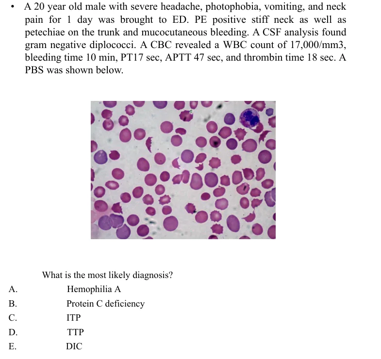
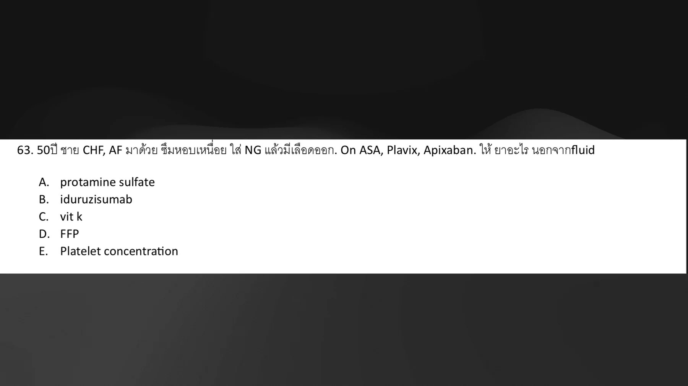
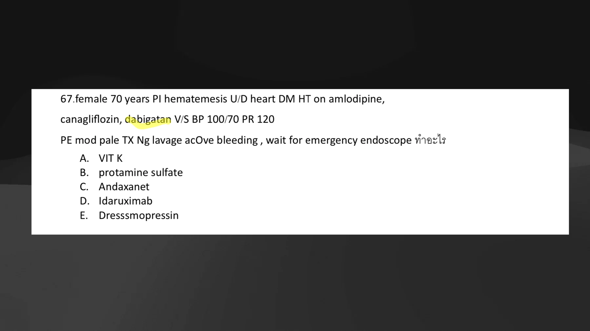
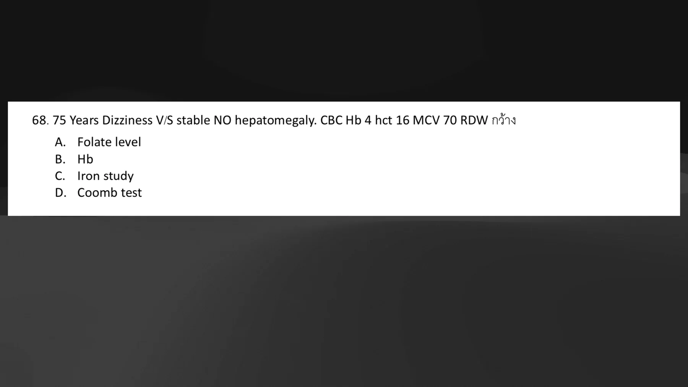
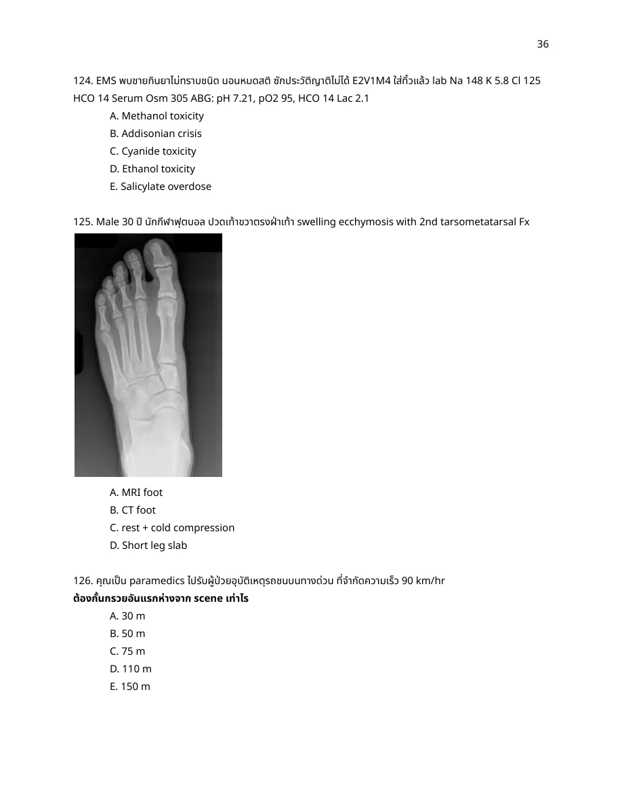
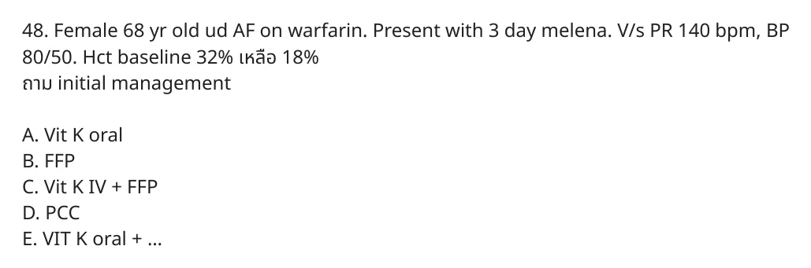

Rows imported from solution_ready_by_special with answer and rationale.
A07-0001A07-Q0001solution_ready
A 40 year old woman with ESRD was diagnosed as DVT, intravenous unfractionated heparin was given. After start treatment for 6 days, her clinical was not improved. CBC showed decrease platelet count from 180,000/mm3 to 90,000/mm3.
Which one is the pathophysiology of this condition?
crop
ยังไม่ถูก
A. Direct activation of platelet
ยังไม่ถูก
B. Acquired deficiency of ADAMTS13
ถูกต้อง
Platelet count drops about 5-10 days after starting unfractionated heparin, with new/worsening thrombosis risk, which fits immune heparin-induced thrombocytopenia. The key pathophysiology is antibody formation against the heparin-PF4 complex, activating platelets.
ยังไม่ถูก
D. Antibody against glycoprotein IIb/IIIa
ยังไม่ถูก
E. Peripheral destruction in reticuloendothelial system
Platelet count drops about 5-10 days after starting unfractionated heparin, with new/worsening thrombosis risk, which fits immune heparin-induced thrombocytopenia. The key pathophysiology is antibody formation against the heparin-PF4 complex, activating platelets.
References
- Source crop: `source_pdf_inventory/question_crops/quiz-bleeding-disorder/quiz_bleeding_disorder_page_0002_q1.png`. - ASH HIT guideline: immune HIT is mediated by antibodies to platelet factor 4/heparin complexes. https://ashpublications.org/bloodadvances/article/2/22/3360/16294/American-Society-of-Hematology-2018-guidelines-for
A07-0002A07-Q0002solution_ready
A 40 year old female is brought to ED with alteration of consciousness. She also has fever and progressive right hemiparesis for 2 days. On examination, she has petechiae along extremities, stupor and motor power gr.II at right side. Vital sign T39, P130/min, BP140/90, RR22/min, O2sat100%. CBC wbc8,700, Hb 8 g/dL, Hct24%, PLT 18,000, BUN 36 mg/dL, cr 1.2 mg/dL, glucose 147 mg/dL, TB 2.6 mg/dL, DB1.0 mg/dL, AST 214 IU/L, ALT 50 IU/L, ALP 98 IU/L, Alb 3.8 g/dL, LDH 2,631 IU/L, PT 13 sec, aPTT 30 sec, D-dimer 650, direct coombs' test negative, PBS: RBC-normochromic normocytic, anisopoikilocytosis 2+, scistocyte2+, polychromasia2+, WBC no immature cell, PLT 1-2/OF.
Which one of the following is the treatment of choice in this patients?
crop
ถูกต้อง
Fever, neurologic deficit, severe thrombocytopenia, hemolytic anemia with schistocytes/high LDH, negative Coombs test, and normal PT/aPTT point to TTP. Treatment should not wait for confirmatory ADAMTS13 testing; therapeutic plasma exchange is the treatment of choice.
Fever, neurologic deficit, severe thrombocytopenia, hemolytic anemia with schistocytes/high LDH, negative Coombs test, and normal PT/aPTT point to TTP. Treatment should not wait for confirmatory ADAMTS13 testing; therapeutic plasma exchange is the treatment of choice.
References
- Source crop: `source_pdf_inventory/question_crops/quiz-bleeding-disorder/quiz_bleeding_disorder_page_0003_q2.png`. - ISTH TTP guideline: therapeutic plasma exchange is core initial treatment for immune TTP. https://onlinelibrary.wiley.com/doi/10.1111/jth.15010
A07-0003A07-Q0003solution_ready
A 20 year old male with severe headache, photophobia, vomiting, and neck pain for 1 day was brought to ED. PE positive stiff neck as well as petechiae on the trunk and mucocutaneous bleeding. A CSF analysis found gram negative diplococci. A CBC revealed a WBC count of 17,000/mm3, bleeding time 10 min, PT17 sec, APTT 47 sec, and thrombin time 18 sec. A PBS was shown below.
What is the most likely diagnosis?

crop
ยังไม่ถูก
A. Hemophilia A
ยังไม่ถูก
B. Protein C deficiency
ยังไม่ถูก
C. ITP
ยังไม่ถูก
D. TTP
ถูกต้อง
Meningococcemia/meningitis with petechiae, mucocutaneous bleeding, prolonged PT/aPTT, and thrombin time prolongation is most consistent with disseminated intravascular coagulation. Hemophilia would not prolong PT, and ITP/TTP usually have normal coagulation times.
Meningococcemia/meningitis with petechiae, mucocutaneous bleeding, prolonged PT/aPTT, and thrombin time prolongation is most consistent with disseminated intravascular coagulation. Hemophilia would not prolong PT, and ITP/TTP usually have normal coagulation times.
This is thrombotic microangiopathy/TTP-HUS pattern: MAHA with fragmented RBCs, thrombocytopenia, renal injury, normal PT/aPTT, and negative D-dimer. Platelets are consumed in microvascular platelet-rich thrombi rather than by coagulation factor consumption as in DIC.
This is thrombotic microangiopathy/TTP-HUS pattern: MAHA with fragmented RBCs, thrombocytopenia, renal injury, normal PT/aPTT, and negative D-dimer. Platelets are consumed in microvascular platelet-rich thrombi rather than by coagulation factor consumption as in DIC.
MCQ 2022 ผู้หญิง 35 ปี on OCP มาด้วย ไข้ ผื่น เพลีย denied diarrhea or URI. PE T38.5 +petechiae. LAB PLT 130,000, other WNL, fibrinogen level 245 (200-400). PBS shown schistocyte. What is the most likely diagnosis?
crop
ยังไม่ถูก
A. ITP
ถูกต้อง
Fever, petechiae, thrombocytopenia, and schistocytes with normal fibrinogen favor TTP over DIC. There is no diarrhea/AKI-dominant picture to prefer HUS, and schistocytes are not the expected finding in isolated ITP.
Fever, petechiae, thrombocytopenia, and schistocytes with normal fibrinogen favor TTP over DIC. There is no diarrhea/AKI-dominant picture to prefer HUS, and schistocytes are not the expected finding in isolated ITP.
50ปี ชาย CHF, AF มาด้วย ซึมหอบเหนื่อย ใส่ NG แล้วมีเลือดออก. On ASA, Plavix, Apixaban. ให้ยาอะไรนอกจาก fluid

crop
ยังไม่ถูก
A. protamine sulfate
ยังไม่ถูก
B. iduruzisumab
ยังไม่ถูก
C. vit K
ยังไม่ถูก
D. FFP
ถูกต้อง
The patient is bleeding while taking aspirin plus clopidogrel plus apixaban. Among the listed choices there is no specific factor Xa reversal agent or PCC option. Protamine reverses heparin, idarucizumab reverses dabigatran, vitamin K/FFP reverse warfarin-related coagulopathy. The only option that addresses the dual antiplatelet effect in the provided answer set is platelet concentrate.
The patient is bleeding while taking aspirin plus clopidogrel plus apixaban. Among the listed choices there is no specific factor Xa reversal agent or PCC option. Protamine reverses heparin, idarucizumab reverses dabigatran, vitamin K/FFP reverse warfarin-related coagulopathy. The only option that addresses the dual antiplatelet effect in the provided answer set is platelet concentrate.
References
- Source crop: `source_pdf_inventory/page_images/exam-r2-hemato-66/page_0002.png`. - ACC Expert Consensus on anticoagulant-related bleeding: idarucizumab is for dabigatran; andexanet/PCC are used for factor Xa inhibitor reversal when indicated. https://www.jacc.org/doi/10.1016/j.jacc.2020.04.053
A07-0008A07-Q0008solution_ready
female 70 years PI hematemesis U/D heart DM HT on amlodipine, canagliflozin, dabigatan V/S BP 100/70 PR 120 PE mod pale TX Ng lavage active bleeding, wait for emergency endoscope ทำอะไร

crop
ยังไม่ถูก
A. VIT K
ยังไม่ถูก
B. protamine sulfate
ยังไม่ถูก
C. Andaxanet
ถูกต้อง
Dabigatran-associated active upper GI bleeding requiring urgent endoscopy needs reversal. Idarucizumab is the specific reversal agent for dabigatran. Vitamin K is for warfarin, protamine for heparin, and andexanet for factor Xa inhibitors.
Dabigatran-associated active upper GI bleeding requiring urgent endoscopy needs reversal. Idarucizumab is the specific reversal agent for dabigatran. Vitamin K is for warfarin, protamine for heparin, and andexanet for factor Xa inhibitors.
References
- Source crop: `source_pdf_inventory/page_images/exam-r2-hemato-66/page_0008.png`. - ACC Expert Consensus on anticoagulant-related bleeding: idarucizumab is recommended for dabigatran reversal in major/life-threatening bleeding. https://www.jacc.org/doi/10.1016/j.jacc.2020.04.053
A07-0009A07-Q0009solution_ready
75 Years Dizziness V/S stable NO hepatomegaly. CBC Hb 4 hct 16 MCV 70 RDW กว้าง

crop
ยังไม่ถูก
A. Folate level
ยังไม่ถูก
B. Hb
ถูกต้อง
Severe microcytic anemia with high RDW in an elderly patient is most suspicious for iron deficiency anemia until proven otherwise. The best next investigation among the choices is iron study.
Severe microcytic anemia with high RDW in an elderly patient is most suspicious for iron deficiency anemia until proven otherwise. The best next investigation among the choices is iron study.
หญิง 36 ปี U/D HT,DLP,morbid obesity 1 d PTA dysarthria Neuro: dysarthria, motor gr.V, sensory&reflex: normal. Lab CBC Hb 8 Hct 25 WBC 8000 plt 20,000. BUN 20 Cr 1.4 PT 11 PTT 25 INR 0.9 CT brain: minimal subacute Lt.occipital infarction PBS: MAHA blood picture ถาม proper Mx
crop
ยังไม่ถูก
A. metronidazole
ถูกต้อง
MAHA plus severe thrombocytopenia with neurologic ischemic symptoms and normal PT/PTT is a TTP pattern. Proper management is urgent plasma exchange; platelet transfusion is generally avoided unless there is life-threatening bleeding.
MAHA plus severe thrombocytopenia with neurologic ischemic symptoms and normal PT/PTT is a TTP pattern. Proper management is urgent plasma exchange; platelet transfusion is generally avoided unless there is life-threatening bleeding.
References
- Source crop: `source_pdf_inventory/question_crops/mcq-202024-pdf/mcq-202024-pdf_page_0016_full.png`. - ISTH TTP guideline: plasma exchange is part of first-line treatment for immune TTP. https://onlinelibrary.wiley.com/doi/10.1111/jth.15010
A07-0011A07-Q0011solution_ready
Male 32 yr after SI, tenderness penis, and flaccid c ecchymosis What time within for Sx that to minimize dysfunction
crop
ยังไม่ถูก
A. 2hr
ยังไม่ถูก
B. 4hr
ยังไม่ถูก
C. 8hr
ยังไม่ถูก
D. 12hr
ถูกต้อง
Penile fracture is a surgical emergency; early repair gives better functional outcomes than delayed conservative treatment. Among the choices, the accepted window to minimize erectile/voiding complications is within 24 hours.
Penile fracture is a surgical emergency; early repair gives better functional outcomes than delayed conservative treatment. Among the choices, the accepted window to minimize erectile/voiding complications is within 24 hours.
References
- Source crop: `source_pdf_inventory/question_crops/mcq-202024-pdf/mcq-202024-pdf_page_0018_full.png`. - Source page duplicate wording also lists the same concept with Thai choices on the same crop.
A07-0012A07-Q0012solution_ready
ผู้ป่วย 78 ปี on losartan, warfarin, metformin มาด้วย epistaxis ทำ gauze compression, no rebleedingแล้ว Lab INR 5.5 ถาม mx
crop
ยังไม่ถูก
A. hold warfarin, oral vitK 1 mg
ถูกต้อง
INR 5.5 with epistaxis that has stopped is not life-threatening bleeding, so PCC/FFP and IV vitamin K are too aggressive. In an elderly patient with recent mucosal bleeding, holding warfarin plus low-dose oral vitamin K is the best listed option; 2.5 mg is the more typical reversal dose among the oral options.
INR 5.5 with epistaxis that has stopped is not life-threatening bleeding, so PCC/FFP and IV vitamin K are too aggressive. In an elderly patient with recent mucosal bleeding, holding warfarin plus low-dose oral vitamin K is the best listed option; 2.5 mg is the more typical reversal dose among the oral options.
GI bleeding with abdominal pain in a patient with prior AAA repair should raise concern for secondary aortoenteric fistula. The investigation should evaluate the aorta/graft, so CT whole aorta/CTA is the best option over routine colonoscopy or nonspecific CT abdomen.
GI bleeding with abdominal pain in a patient with prior AAA repair should raise concern for secondary aortoenteric fistula. The investigation should evaluate the aorta/graft, so CT whole aorta/CTA is the best option over routine colonoscopy or nonspecific CT abdomen.
7. Female 70 year old come to ED with falling from stairs. She had multiple facial swelling and ecchymosis. On physical examination, you can palpable deformity from maxilla up to floor of orbit and nasal but not involve zygomatic bone. What is the diagnosis?
crop
ยังไม่ถูก
A. Tripod fracture
ยังไม่ถูก
B. Blowout fracture
ยังไม่ถูก
C. Le fort I fracture
ถูกต้อง
Le Fort II is the pyramidal midface fracture pattern involving the maxilla, nasal bridge, and orbital floor/rim region while sparing the zygomatic arches. Le Fort I is lower maxilla only; Le Fort III is craniofacial dissociation with zygomatic involvement.
Le Fort II is the pyramidal midface fracture pattern involving the maxilla, nasal bridge, and orbital floor/rim region while sparing the zygomatic arches. Le Fort I is lower maxilla only; Le Fort III is craniofacial dissociation with zygomatic involvement.
This is the duplicate ITP question from A07-0007. The decisive clue is isolated severe thrombocytopenia (platelets 10,000/mm3) with mucosal bleeding; vWD/Glanzmann usually have normal platelet count.
This is the duplicate ITP question from A07-0007. The decisive clue is isolated severe thrombocytopenia (platelets 10,000/mm3) with mucosal bleeding; vWD/Glanzmann usually have normal platelet count.
An adolescent male with new unilateral persistent epistaxis and no prior bleeding history suggests a juvenile nasopharyngeal vascular tumor/angiofibroma-type lesion. vWD would usually have recurrent or family mucocutaneous bleeding; rhinitis sicca is less likely with persistent unilateral bleeding in this demographic.
An adolescent male with new unilateral persistent epistaxis and no prior bleeding history suggests a juvenile nasopharyngeal vascular tumor/angiofibroma-type lesion. vWD would usually have recurrent or family mucocutaneous bleeding; rhinitis sicca is less likely with persistent unilateral bleeding in this demographic.
47. ชาย 60 ปี DM HT CKD4 active bleeding per gum, bleeding time 12, BUN 70, Cr 3.กว่า ถาม mx
crop
ยังไม่ถูก
A. FFP
ถูกต้อง
CKD with high BUN/Cr, mucosal bleeding, and prolonged bleeding time is uremic platelet dysfunction. DDAVP improves platelet adhesion transiently and is the best acute option listed.
CKD with high BUN/Cr, mucosal bleeding, and prolonged bleeding time is uremic platelet dysfunction. DDAVP improves platelet adhesion transiently and is the best acute option listed.
125. Male 30 ปี นักกีฬาฟุตบอล ปวดเท้าขวาตรงฝ่าเท้า swelling ecchymosis with 2nd tarsometatarsal Fx

crop
ยังไม่ถูก
A. MRI foot
ถูกต้อง
Plantar pain/ecchymosis with 2nd tarsometatarsal fracture is a Lisfranc injury pattern. CT foot is the best listed study to define the fracture-dislocation pattern and guide orthopedic management.
Plantar pain/ecchymosis with 2nd tarsometatarsal fracture is a Lisfranc injury pattern. CT foot is the best listed study to define the fracture-dislocation pattern and guide orthopedic management.
136. พาราเมดิกออกรับชายกลางคน MCA ปวดต้นขาซ้าย+deformity, access at scene: BP drop, tachycardia ตรวจร่างกายเบื้องต้น conscious, no-active bleed LW 3 cm Rt.leg, deformity+swelling Lt.thigh with shortening Lt.leg+external rotation+ecchymosis (จะสื่อว่า pelvic fx) ถาม initial mx.
crop
ถูกต้อง
The prehospital trauma picture suggests unstable pelvic fracture with shock. Initial management is early pelvic binder application to reduce pelvic volume and bleeding while resuscitation/transport proceeds.
The prehospital trauma picture suggests unstable pelvic fracture with shock. Initial management is early pelvic binder application to reduce pelvic volume and bleeding while resuscitation/transport proceeds.
Bloody diarrhea followed by seizure/neurologic symptoms, anemia, thrombocytopenia, AKI, and smear abnormality fits hemolytic uremic syndrome. DIC would be expected to have a consumptive coagulopathy picture.
Bloody diarrhea followed by seizure/neurologic symptoms, anemia, thrombocytopenia, AKI, and smear abnormality fits hemolytic uremic syndrome. DIC would be expected to have a consumptive coagulopathy picture.
100. A 40-year-old woman with end stage renal disease was diagnosed as deep vein thrombosis, intravenous unfractionated heparin was given. After start treatment for 6 days, her clinical was not improved. Complete blood count showed decreased platelet count from 180,000/mm3 to 90,000/mm3. Which one is the pathophysiology of this condition?
ยังไม่ถูก
A. Direct activation of platelet
ยังไม่ถูก
B. Acquire deficiency of ADAMTS13
ถูกต้อง
This is the same HIT stem as A07-0001. Platelet fall after several days of unfractionated heparin is caused by antibodies against platelet factor 4/heparin complexes.
ยังไม่ถูก
D. Antibody against glycoprotein IIb/IIIa
ยังไม่ถูก
E. Peripheral destruction in reticuloendothelial system
This is the same HIT stem as A07-0001. Platelet fall after several days of unfractionated heparin is caused by antibodies against platelet factor 4/heparin complexes.
References
- Source: `source_pdf_inventory/sources/quiz-clotting-disorder.md`. - ASH HIT guideline: HIT is an immune reaction involving antibodies to PF4/heparin complexes. https://ashpublications.org/bloodadvances/article/2/22/3360/16294/American-Society-of-Hematology-2018-guidelines-for
A07-0024A07-Q0024solution_ready
77. A 52-year-old female was prescribed warfarin and enoxaparin for a newly diagnosed deep vein thrombosis (DVT) in the left lower extremity. She was discharged from the hospital with an INR is 2.5. Three days later, she returns to the emergency department with a purple, cold, and extremely painful right foot with punctate areas of necrosis. Which of the following MOST accurately describes this patient's disease process?
ยังไม่ถูก
A. Antiphospholipid syndrome
ถูกต้อง
Painful purpura/necrosis a few days after starting warfarin is warfarin-induced skin necrosis. It is classically linked to early depletion of protein C, creating a transient hypercoagulable state, especially in protein C deficiency.
Painful purpura/necrosis a few days after starting warfarin is warfarin-induced skin necrosis. It is classically linked to early depletion of protein C, creating a transient hypercoagulable state, especially in protein C deficiency.
Older adult with progressive anemia plus leukopenia and thrombocytopenia, macrocytosis/dimorphic RBCs, very low reticulocyte response, and no hepatosplenomegaly fits a marrow production disorder, especially myelodysplastic syndrome. The source crop also carries a handwritten cue favoring MDS/pancytopenia over B12/folate.
48. Female 68 yr old ud AF on warfarin. Present with 3 day melena. V/s PR 140 bpm, BP 80/50. Hct baseline 32% เหลือ 18% ถาม initial management

crop
ยังไม่ถูก
A. Vit K oral
ยังไม่ถูก
B. FFP
ยังไม่ถูก
C. Vit K IV + FFP
ถูกต้อง
This is life-threatening warfarin-associated GI bleeding: shock, tachycardia, and major hematocrit drop. The fastest reversal option listed is prothrombin complex concentrate (PCC); vitamin K is also required clinically, but among the choices only PCC gives rapid factor replacement.
This is life-threatening warfarin-associated GI bleeding: shock, tachycardia, and major hematocrit drop. The fastest reversal option listed is prothrombin complex concentrate (PCC); vitamin K is also required clinically, but among the choices only PCC gives rapid factor replacement.
References
- Source crop: `source_pdf_inventory/question_crops/mcq-2025-รวมไม่แยกหัวข้อ/mcq_2025_combined_page_0036_q035.png`. - ACC Expert Consensus on anticoagulant-related bleeding: use 4-factor PCC for major VKA-associated bleeding, with vitamin K. https://www.jacc.org/doi/10.1016/j.jacc.2020.04.053
A07-0027A07-Q0027solution_ready
49. อายุ 33 ปี blunt ab FAST pos + BP drop HR เร็ว > CT เป็น splenic tear gr.3 c hemoperitoneum ไม่ผ่า พิจารณาให้ MTP เป็น PRC 4u + FFP 4u + Plt 1 u หลังให้เลือดไป 6 ชม แล้ว BT 38.6 HR 130 BP 100/60 RR32 sat 88 lung crep BLL, no edema, no JVC distension, CXR: bilat lower lung inf ถาม Mx
crop
ยังไม่ถูก
A. Furosemide
ยังไม่ถูก
B. hydrocortisone IV
ยังไม่ถูก
C. Epinephrine IM
ยังไม่ถูก
D. ลด rate ให้เลือด
ถูกต้อง
Fever, hypoxemia, bilateral infiltrates, no JVD/edema, and onset within 6 hours after transfusion is TRALI. Management is to stop transfusion and provide supportive respiratory/hemodynamic care; diuretics are for volume overload/TACO, not TRALI.
Fever, hypoxemia, bilateral infiltrates, no JVD/edema, and onset within 6 hours after transfusion is TRALI. Management is to stop transfusion and provide supportive respiratory/hemodynamic care; diuretics are for volume overload/TACO, not TRALI.
50. 2 years old presented with ecchymosis along extremities after minor trauma no petechiae no known U/D Lab Plt 280k, PTT 65, PT 14 Appropiate investigation? 1. Mixed test 2. Factor VIII 3. Factor IX 4. vWF
Bruising after minor trauma with normal platelet count/PT and isolated prolonged PTT suggests an intrinsic pathway factor deficiency or inhibitor. The appropriate first investigation is a mixing study to distinguish deficiency from inhibitor before specific factor assays.
196. ผู้ป่วยเด็กอายุประมาณ toddler มาด้วย minor trauma จากนั้นมีจํ้าเลือดขึ้นที่ข้อหลายๆข้อ V/S stable PE: multiple ecchymosis without petechiae PTT 59 PT 12 Platelet 359,000 ถาม most appropriate next step management 1. mixing study 2. factor VIII level 3. factor IX level 4. Bone marrow biopsy 5. vWF level
Joint bleeding/ecchymoses with normal platelet count and PT but prolonged PTT points to hemophilia or another intrinsic pathway problem. The best next step among the choices is a mixing study, then factor VIII/IX levels depending on correction pattern.
Reviewed duplicate source crops show isolated prolonged aPTT in a hemodialysis patient, which points to heparin effect rather than uremic platelet dysfunction; protamine reverses heparin.
Reviewed duplicate source crops show isolated prolonged aPTT in a hemodialysis patient, which points to heparin effect rather than uremic platelet dysfunction; protamine reverses heparin.
A07-0032A07-Q0032solution_ready
93. A 72-year-old male with advanced liver cirrhosis (MELD score 18) presents with massive hematemesis, hypotension (BP 80/50 mmHg), tachycardia (HR 130 bpm), positive shifting dullness • Labs: o Hemoglobin: 6.8 g/dL o Platelets: 50,000/mm³ o INR: 2.0 o Creatinine: 1.8 mg/dL (baseline 1.0) Despite initial IV fluid resuscitation and transfusion of 2 units of packed red blood cells, he remains hemodynamically unstable and Bleeding continues from NG tube What is the next appropriate sequence of intervention?
crop
ถูกต้อง
Duplicate variceal bleeding sequence: start vasoactive therapy and urgent endoscopy; TIPS is rescue for refractory bleeding.
ยังไม่ถูก
B. Vasopressor
ถูกต้อง
Duplicate variceal bleeding sequence: start vasoactive therapy and urgent endoscopy; TIPS is rescue for refractory bleeding.
ยังไม่ถูก
D. PPI
ถูกต้อง
Duplicate variceal bleeding sequence: start vasoactive therapy and urgent endoscopy; TIPS is rescue for refractory bleeding.
The described lesion is warfarin-induced skin necrosis after recent warfarin initiation. Management is to stop warfarin and continue anticoagulation with heparin while reversing/protecting protein C activity as needed.
The described lesion is warfarin-induced skin necrosis after recent warfarin initiation. Management is to stop warfarin and continue anticoagulation with heparin while reversing/protecting protein C activity as needed.
48. Female 68 yr old ud AF on warfarin. Present with 3 day melena. V/s PR 140 bpm, BP 80/50. Hct baseline 32% เหลือ 18% ถาม initial management\nA. Vit K oral\nB. FFP\nC. Vit K IV + FFP\nD. PCC\nE. VIT K oral + ...
Warfarin-associated life-threatening GI bleeding with shock requires rapid reversal. Four-factor PCC provides faster INR reversal than FFP and is the best initial reversal product among the choices.
68. Male 70 yr UD HT, AF on warfarin present with 45 mins PTA Lt hemiparesis Lt facial palsy INR 1.4 lab อื่น normal treatment
crop
ถูกต้อง
The patient presents within 45 minutes of acute ischemic stroke symptoms. Warfarin use is not an absolute contraindication when INR is 1.4, so IV alteplase/rTPA is appropriate after usual imaging exclusion of hemorrhage.
The patient presents within 45 minutes of acute ischemic stroke symptoms. Warfarin use is not an absolute contraindication when INR is 1.4, so IV alteplase/rTPA is appropriate after usual imaging exclusion of hemorrhage.
Bleeding from a tracheostomy tube is treated as possible tracheo-innominate fistula while awaiting ENT; hyperinflate the cuff.
A07-0039A07-Q0039solution_ready
25. ชาย 65 ปี HT DLP AFHe usually missing occasional dose of warfarin present with sudden visual loss right eye RAPD +ve fundoscopy : cherry red spot with pale eyeground, CT brain not seen ICH or infarct A ASA B Eye rubbing C Thrombolytic D HBOT
The reviewed source crop shows acute CRAO findings with CT brain excluding hemorrhage/infarct and lists thrombolytic as the intended acute-treatment option.
Bloody diarrhea followed by seizure/encephalopathy, anemia, thrombocytopenia, elevated creatinine, and hematuria is the classic triad/pattern of hemolytic uremic syndrome, often after Shiga-toxin producing E. coli infection.
Bloody diarrhea followed by seizure/encephalopathy, anemia, thrombocytopenia, elevated creatinine, and hematuria is the classic triad/pattern of hemolytic uremic syndrome, often after Shiga-toxin producing E. coli infection.
References
- Source answer crop: `source_pdf_inventory/question_crops/seizure-ped/seizure_ped_page_0007_q4.png`. - CDC, E. coli and HUS: HUS can follow diarrheal illness and causes kidney failure, hemolytic anemia, and low platelets. https://www.cdc.gov/ecoli/signs-symptoms/hus.html
97. ผู้ป่วยหญิง G2P1 GA 34 wk มาด้วยปวดท้อง มีเลือดออกทางช่องคลอด ตรวจร่างกาย V/S BP 90/60 HR tachycardia Abd: gravid, hypertonicity contraction, can't palpate fetal part จากนั้น monitor EFM: FHR 90 bpm, late deceleration ถาม immediate mx
crop
ยังไม่ถูก
A. IV fluid
ยังไม่ถูก
B. PRC transfusion
ถูกต้อง
Painful vaginal bleeding, hypertonic uterus, maternal hypotension/tachycardia, and fetal bradycardia/late decelerations indicate severe placental abruption with fetal distress. Immediate resuscitation is needed, but the best listed definitive emergency management is cesarean delivery.
ยังไม่ถูก
D. ..
ถูกต้อง
Painful vaginal bleeding, hypertonic uterus, maternal hypotension/tachycardia, and fetal bradycardia/late decelerations indicate severe placental abruption with fetal distress. Immediate resuscitation is needed, but the best listed definitive emergency management is cesarean delivery.
Painful vaginal bleeding, hypertonic uterus, maternal hypotension/tachycardia, and fetal bradycardia/late decelerations indicate severe placental abruption with fetal distress. Immediate resuscitation is needed, but the best listed definitive emergency management is cesarean delivery.
100. หญิง 26 ปี G1 GA 29 มาด้วยปวดหัว ปวดท้องบนขวา ลูกดิ้นน้อยลง มีประวัติบวม 1 สัปดาห์ PE: V/S - T 37.2, P 108, RR 20, BP 162/104 GA - alert, anxious Eye - no papilledema H&L - normal Abd - tender RUQ, no rebound, no guarding NS - reflex 3+, no clonus Ext - pitting edema both legs Lab: CBC - Hb 11.5, Hct 34, WBC 12500, Platelet 98000 Chem - BUN 18, Cr 1.1, Na 138, K 4.2, Cl 106, HCO3 22, LDH 390 LFT - AST 70, ALT 65, ALP 140, TB 1.4, DB 0.3, Alb 3.1 Coag - normal U/A - protein 3+ UPCR - 0.5 g/g
ถาม next appropriate management?
crop
ยังไม่ถูก
A. Labetalol
ยังไม่ถูก
B. Hydralazine
ยังไม่ถูก
C. Nicardipine
ถูกต้อง
This is preeclampsia with severe features: severe-range systolic BP, headache/RUQ pain, hyperreflexia, thrombocytopenia below 100,000, transaminitis, and proteinuria. The next key management from the choices is magnesium sulfate for seizure prophylaxis while BP control, steroids/OB planning, and delivery timing are arranged.
This is preeclampsia with severe features: severe-range systolic BP, headache/RUQ pain, hyperreflexia, thrombocytopenia below 100,000, transaminitis, and proteinuria. The next key management from the choices is magnesium sulfate for seizure prophylaxis while BP control, steroids/OB planning, and delivery timing are arranged.
100. หญิง 26 ปี G1 GA 29 มาด้วยปวดหัว ปวดท้องบนขวา ลูกดิ้นน้อยลง มีประวัติบวม 1 สัปดาห์ PE: V/S - T 37.2, P 108, RR 20, BP 162/104 GA - alert, anxious Eye - no papilledema H&L - normal Abd - tender RUQ, no rebound, no guarding NS - reflex 3+, no clonus Ext - pitting edema both legs ถาม next appropriate management
crop
ยังไม่ถูก
A. Labetalol
ยังไม่ถูก
B. Hydralazine
ยังไม่ถูก
C. Nicardipine
ถูกต้อง
Duplicate of A12-0026. Preeclampsia with severe features at 29 weeks requires magnesium sulfate for seizure prophylaxis as the key immediate therapy among the options.
ยังไม่ถูก
E. Immediate delivery
Lab:
CBC - Hb 11.5, Hct 34, WBC 12500, Platelet 98000
Chem - BUN 18, Cr 1.1, Na 138, K 4.2, Cl 106, HCO3 22, LDH 390
LFT - AST 70, ALT 65, ALP 140, TB 1.4, DB 0.3, Alb 3.1
Coag - normal
U/A - protein 3+
UPCR - 0.5 g/g
Duplicate of A12-0026. Preeclampsia with severe features at 29 weeks requires magnesium sulfate for seizure prophylaxis as the key immediate therapy among the options.
COX inhibition causing prostaglandin depletion and reduced mucosal protection
Rationale
NSAID GI bleeding occurs through impaired prostaglandin-mediated mucosal defense and platelet effects.
A07-0050A07-Q0050solution_ready
A 30-year-old woman (G1P0) in her 34 weeks of pregnancy is brought to ED due to progressive fatigue and jaundice. Her past medical history is unremarkable, without alcohol consumption habit, and acetaminophen intake. On physical examination, she is afebrile, stable in the vital signs, unremarkable abnormality of examination, except positive for asterixis. Her blood tests were; Hb 11 g/dL, WBC 16,000/µL (N56, L40, M3), platelet 90,000/µL, with normal peripheral blood smear, creatinine 1.2 mg/dL, AST 200 U/L, ALT 180 U/L, TB 2.1 mg/dL, INR 2.0, LDH 110 U/, and viral hepatitis panel are negative. A right upper quadrant ultrasound reveals an enlarged, echogenic liver with no biliary dilatation. What is the most likely diagnosis? A. Preeclampsia B. Acute cholecystitis C. Cholestasis of pregnancy D. Acute fatty liver of pregnancy E. Hemolysis, elevated liver enzymes, low platelet count (HELLP) syndrome
Third-trimester jaundice, encephalopathy/asterixis, coagulopathy, thrombocytopenia, and echogenic liver fit AFLP.
A07-0051A07-Q0051solution_ready
A 60-year-old man, DM, HT coronary artery disease, presented with severe abdominal pain for 3 hours. He denied fever, nausea or vomiting. Physical examination revealed T 37 C, PR 100/min, BP 120/80 mmHg, RR 20/min, generalized mild tenderness, no guarding or rigidity, hypoactive bowel sound, other within normal limits. Laboratory shown CBC Hb 12 mg/dl, Hct 36%, WBC 12,000/mm3 (N 80%, L20%), platelet 150,000, BUN 28 mg/dl, Cr 1.4 mg/dl, Na 136 mEq/L, K 5.9 mEq/L, Cl 98 mEq/L, HCO3 10 mEq/L, POCT glucose 200 mg/dl. What is the most appropriate investigation? A. Blood lactate B. MRI abdomen C. CTA abdomen D. Plain film abdomen E. Ultrasound abdomen
Suspected acute mesenteric ischemia is best investigated with CT angiography when stable enough.
A07-0052A07-Q0052solution_ready
A 40-year-old patient came to the emergency department because his penis got unsolved erection for 6 hours. Two days ago, he was diagnosed as incomplete stricture at distal bulbous part of urethra and underwent transurethral endoscopy and internal urethrotomy then discharge. Six hours prior to the hospital, his penis got painless erection and didn't resolve. Vital signs: BP 180/100 mmHg, PR 80/min, BT 36.9 degree Celsius, RR 18/min. On physical examination, there was sustained erection, turgid corpora, swelling of penis and prepuce, and tenderness at the perineum, bleeding from meatus, ecchymosis of glans penis. Which of the following is the most appropriate management? A. Warm sitz baths B. Terbutaline orally C. Arterial embolization D. Exchange transfusion E. Cavernosal aspiration
Ischemic priapism initial invasive management is aspiration/irrigation of the corpora cavernosa.
A07-0053A07-Q0053solution_ready
A 40-year-old male had BP190/95 mmHg with generalized weakness about grade IV of motor power of his limbs. His laboratory investigations was shown: Hb 11.0 g/dL, WBC 9,800 cells/µL, platelet 250,000 cells/µL, glucose 90 mg/dL, BUN 14 mg/dL, Cr 0.8 mg/dL, Na 152 mEq/L, K 3 mEq/L, Cl 100 mEq/L, CO2 30 mEq/L and his spot urine was shown osmolarity 400 mOsm/kg and urine electrolytes: sodium 35 mEq/L, potassium 60 mEq/L, chloride 32 mEq/L. Which of the following is the most appropriate further investigation? A. Renin B. Cortisol C. Aldosterone D. Arterial blood gas E. CT brain with contrast
Hypertension, hypokalemia, and metabolic alkalosis suggest primary hyperaldosteronism; aldosterone/renin testing is indicated.
A07-0054A07-Q0054solution_ready
A 43 year-old-male had come to the hospital because he had fatigue and complaint about decreased urine output for three days. His face looked swollen and puffy both eyelids. There also was edema on both legs. Otherwise was unremarkable. His laboratory investigations shown: Hb 6.9 g/dL, WBC 8,800 cells/µL, platelet 169,000 cells/µL, BUN 20 mg/dL, Cr 1.1 mg/dL, Na 134 mEq/L, K 3.7 mEq/L, Cl 89 mEq/L, CO2 22 mEq/L. There was found blood 2+ and protein 2+ on urine dipstick test. Urine sodium 16 mEq/L, Urine creatinine 84 mEq/L. Which of the following is the most likely cause? A. Prerenal azotemia B. Postrenal azotemia C. Acute tubular necrosis D. Acute glomerulonephritis E. Acute interstitial nephritis
Edema, oliguria, hematuria, and proteinuria indicate nephritic syndrome/acute GN.
A07-0055A07-Q0055solution_ready
A 50-year-old female had come to the hospital because of dizziness and fatigue for 3 days. She looked mildly pale. Her laboratory investigations were shown: Hb 6.5 g/dL, WBC 7,800 cells/uL, platelet 170,000 cells/uL, BUN 28 mg/dL, Cr 1.2 mg/dL, Na 120 mEq/L, K 3.7 mEq/L, Cl 95 mEq/L, CO2 24 mEq/L, blood sugar 180 mg/dL, urine osmolarity 60 mOsm/L, urine creatinine 48 mEq/L and urine sodium 60 mEq/L. Which of the following is the most possibly caused in this patient?\nA. Hypothyroidism\nB. Primary polydipsia\nC. Nephrotic syndrome\nD. Glucocorticoids deficiency\nE. Syndrome of inappropriate secretion of antidiuretic hormone
Hyponatremia with very dilute urine osmolality around 60 suggests excess water intake rather than SIADH.
A07-0056A07-Q0056solution_ready
A 43 year-old-male had come to the hospital because he had fatigue and complaint about decreased urine output for three days. His face looked swollen and puffy both eyelids. There also was edema on both legs. Otherwise was unremarkable. His laboratory investigations shown: Hb 6.9 g/dL, WBC 8,800 cells/uL, platelet 169,000 cells/uL, BUN 20 mg/dL, Cr 1.1 mg/dL, Na 134 mEq/L, K 3.7 mEq/L, Cl 89 mEq/L, CO2 22 mEq/L. There was found blood 2+ and protein 2+ on urine dipstick test. Urine sodium 16 mEq/L, urine creatinine 84 mEq/L. Which of the following is the most likely cause?\nA. Prerenal azotemia\nB. Postrenal azotemia\nC. Acute tubular necrosis\nD. Acute glomerulonephritis\nE. Acute interstitial nephritis
Hemolysis/dark urine in a child is initially supported with IV hydration to protect kidneys while evaluating cause.
A07-0058A07-Q0058solution_ready
65. Male 60yr HT, ERSD on HD, seizure disorder presented with seizure หยุดแล้ว PE LW at tongue active bleeding, BUN 103 Cr 4 What is appropriate management
Reference: Source: Test ESRD.pdf | Page/slot: 3 | Marker: Q2
ซ่อนเฉลยเปิดเฉลยSolution readyA07-0058 answer
Answer
DDAVP
Rationale
Uremic platelet dysfunction with mucosal bleeding is treated with desmopressin.
A07-0059A07-Q0059solution_ready
A 4-year-old girl who had cerebral palsy from head injury last year was brought to emergency department due to seizure for 10 minutes. She had diarrhea and vomiting for 3 days. Seizure was stopped after she got intravenous diazepam 1 dose. Physical examination revealed BT 37 C, RR 42/min, HR 96/min, BP 80/50 mmHg, drowsiness, dry lips, sunken eyeball, capillary refill 1 second, motor at least gr IV all, DTR 1+ all, others - unremarkable. Laboratory investigation showed Hb 14, Hct 40, WBC 11,200 (N 60, L 32, M 5), platelet 140,000, blood sugar 90, BUN 11.2, Cr 1.2, Na 112, K 4.3, Cl 102, HCO3 20, urine Na 40. What could be the most likely cause of this abnormality?
p37
ยังไม่ถูก
A. SIADH
ยังไม่ถูก
B. Gastroenteritis
ยังไม่ถูก
C. Primary polydipsia
ถูกต้อง
Hyponatremia with dehydration and high urine sodium after brain injury favors cerebral salt wasting over SIADH.
C. difficile colitis after hospitalization/antibiotic exposure is treated with oral vancomycin when listed.
A07-0063A07-Q0063solution_ready
Male 70 yrs, UD pulmonary TB กำลังรักษาอยู่ วันนี้มาด้วย hemoptysis 600 ml หลังจาก on ETT ยังมี bleed ทาง ETT 500 ml BP 80/50 PR 130 ถาม proper management
crop
ยังไม่ถูก
A. tube one lung
ยังไม่ถูก
B. Bronchoscope
ยังไม่ถูก
C. Embolization of bronchial artery
ถูกต้อง
After airway control, ongoing massive hemoptysis with shock requires immediate resuscitation including massive transfusion while arranging definitive control.
After airway control, ongoing massive hemoptysis with shock requires immediate resuscitation including massive transfusion while arranging definitive control.
A07-0064A07-Q0064solution_ready
MCQ 2560
22 years old woman present with oral bleeding for 6 hrs. She has had bleeding per gum and hypermenorrhea but denieds family history of bleeding disorder.
Epistaxis/ecchymosis with prolonged bleeding time and aPTT but normal PT/platelets fits vWD type 1.
A07-0070A07-Q0070solution_ready
170. A 6-year-old boy is brought in after a high-speed motor vehicle accident. On arrival, his vital signs are: heart rate 170 bpm, respiratory rate 28 breaths per minute, blood pressure 60/40 mmHg, and SpO2 96% on room air. On physical examination, he is lethargic with delayed capillary refill time >5 seconds and tenderness over the right upper quadrant of the abdomen. A FAST exam reveals free fluid in the hepatorenal space. After surgical consultation, a 20 mL/kg bolus of Ringer's Lactate is administered. Post-resuscitation, his vital signs are: heart rate 160 bpm, blood pressure 70/50 mmHg, respiratory rate 26 breaths per minute. What is the next best step in management?
Persistent shock after 20 mL/kg crystalloid with positive FAST needs packed red cell transfusion.
A07-0074A07-Q0074solution_ready
Q5. Male 59 yr with underlying AF and thyroid disease. 30 min PTA syncope; complains of weakness and DOE for several weeks. V/S stable, moderate pale conjunctiva, no hepatosplenomegaly, neuro: unstable gait. Lab: Hb 7, Hct 21, WBC 1,600, platelet 80,000. PBS shown. Diagnosis?
MCQ 2024 source page p.16, question 200
ยังไม่ถูก
A. Acute leukemia
ยังไม่ถูก
B. Aplastic anemia
ยังไม่ถูก
C. Folate deficiency
ถูกต้อง
Pancytopenia with anemia plus gait instability/neurologic involvement suggests megaloblastic anemia from vitamin B12 deficiency rather than folate deficiency or aplastic anemia.
ยังไม่ถูก
E. Drug induced hemolytic anemia
Source: Old special HTML: A04 | Page/slot: old-special | Marker: a04-nutrition-vitamins-metabolic-q5
Reference: Source: Old special HTML: A04 | Page/slot: old-special | Marker: a04-nutrition-vitamins-metabolic-q5
ซ่อนเฉลยเปิดเฉลยSolution readyA07-0074 answer
Answer
D. Vitamin B12 deficiency
Rationale
Pancytopenia with anemia plus gait instability/neurologic involvement suggests megaloblastic anemia from vitamin B12 deficiency rather than folate deficiency or aplastic anemia.
Gait instability with anemia after a risk factor for malabsorption is most consistent with vitamin B12/cobalamin deficiency; folate deficiency does not explain the neurologic findings.
ยังไม่ถูก
E. Folic
Source: Old special HTML: A04 | Page/slot: old-special | Marker: a04-nutrition-vitamins-metabolic-q9
Reference: Source: Old special HTML: A04 | Page/slot: old-special | Marker: a04-nutrition-vitamins-metabolic-q9
ซ่อนเฉลยเปิดเฉลยSolution readyA07-0075 answer
Answer
D. Cobalamine
Rationale
Gait instability with anemia after a risk factor for malabsorption is most consistent with vitamin B12/cobalamin deficiency; folate deficiency does not explain the neurologic findings.
References
- Source note: Extra A04 source item recovered from Endopdf.pdf page 82; answers intentionally omitted. - Original reference: Reference: Source: Endopdf.pdf | p.82
Q112. A 50-year-old man presents to the emergency department with shortness of breath. He is alert and oriented and hemodynamically stable. You have decided the patient has decision-making capacity. In which of the following scenarios may informed consent be waived for further evaluation and treatment?
ยังไม่ถูก
A. Chest tube insertion for a pneumothorax
ถูกต้อง
B. Isolation and treatment for active pulmonary tuberculosis in a homeless man
ยังไม่ถูก
C. Observation for serial troponin testing in a prisoner with known coronary artery disease
ยังไม่ถูก
D. Transfusion of blood for anemia in a Jehovah’s Witness
Source: Old special HTML: A09 | Page/slot: old-special | Marker: a09-mcgraw-board-review-q112
Reference: Source: Old special HTML: A09 | Page/slot: old-special | Marker: a09-mcgraw-board-review-q112
Source: Old special HTML: A09 | Page/slot: old-special | Marker: a09-tb-tuberculosis-complications-q1
Reference: Source: Old special HTML: A09 | Page/slot: old-special | Marker: a09-tb-tuberculosis-complications-q1
ซ่อนเฉลยเปิดเฉลยSolution readyA07-0079 answer
Answer
E
Rationale
Rationale not imported.
References
- Source note: Source file: MCQ 2025 รวมไม่แยกหัวข้อ.pdf - Original reference: Reference: Source: MCQ 2025 รวมไม่แยกหัวข้อ.pdf | p.76 | Source-preserving stem/options. No answer lock in this round.
A07-0080A07-Q0080solution_ready
Q30. A renal dialysis patient presents at 2 am with continu ous oozing around a new dialysis catheter site in her upper chest wall. The catheter was placed 1 day ago, but she has not been dialyzed for 3 days. She other wise looks well and is stable. Which of the following is the fastest and BEST INITIAL treatment to stop the bleeding quickly?
ยังไม่ถูก
A. Cryoprecipitate
ถูกต้อง
B. Desmopressin
ยังไม่ถูก
C. Hemodialysis
ยังไม่ถูก
D. Platelet transfusion
Source: Old special HTML: A14 | Page/slot: old-special | Marker: a14-mcgraw-ch08-renal-and-genitourinary-q30
Reference: Source: Old special HTML: A14 | Page/slot: old-special | Marker: a14-mcgraw-ch08-renal-and-genitourinary-q30
Q18. 7-year-old child presents with seizure and bloody diarrhea. Labs show thrombocytopenia, AKI, and blood smear with MAHA picture. What is the diagnosis?
ถูกต้อง
A. HUS
ยังไม่ถูก
B. DIC
Source: Old special HTML: A14 | Page/slot: old-special | Marker: a14-pediatric-renal-and-urogenital-q18
Reference: Source: Old special HTML: A14 | Page/slot: old-special | Marker: a14-pediatric-renal-and-urogenital-q18
ซ่อนเฉลยเปิดเฉลยSolution readyA07-0081 answer
Answer
A
Rationale
Rationale not imported.
References
- Source note: Source page from AKI test.pdf p.3 currently shows only 2 recoverable choice(s). The remaining choices have not been safely recovered yet. Source file: AKI test.pdf - Original reference: Reference: Source: AKI test.pdf | p.3
A07-0082A07-Q0082solution_ready
Q1. A 58-year-old woman with chronic kidney disease (CKD) arrives at the emergency department with massive hematemesis. She is hypotensive and tachycardic, leading to the activation of the massive transfusion protocol, receiving 6 units of packed red blood cells (pRBCs) and 4 units of fresh frozen plasma (FFP). Following this, she experiences carpopedal spasm and a tonic-clonic seizure. Her vitals post-seizure are: blood pressure 90/55 mmHg, heart rate 115 bpm, respiratory rate 22/min, and SpO₂ 98% on room air. An ECG shows a prolonged QT interval. Initial arterial blood gas results reveal: pH 7.30, pCO₂ 32 mmHg, HCO₃⁻ 15 mEq/L, and lactate 4.2 mmol/L. After IV calcium gluconate is administered, her symptoms persist, and a repeat ECG still shows a prolonged QT interval. What is the most appropriate next step in management?
Oozing after an unknown snakebite suggests venom-induced coagulopathy. PT/INR is the key coagulation screen among the listed options; because PT is listed separately, PT is the best answer here.
ยังไม่ถูก
B. INR
ยังไม่ถูก
C. Peak flow
ยังไม่ถูก
D. CBC
ยังไม่ถูก
E. Platelet
Source: Old special HTML: A16 | Page/slot: old-special | Marker: a16-envenomation-snake-marine-q2
Reference: Source: Old special HTML: A16 | Page/slot: old-special | Marker: a16-envenomation-snake-marine-q2
ซ่อนเฉลยเปิดเฉลยSolution readyA07-0085 answer
Answer
A. PT
Rationale
Oozing after an unknown snakebite suggests venom-induced coagulopathy. PT/INR is the key coagulation screen among the listed options; because PT is listed separately, PT is the best answer here.
Q14. You are evaluating a 2-year-old boy who was brought to the emergency department by his parents after they witnessed ingestion of a single pellet of “rat poison.” They pulled the pellet from his mouth, but fear that “some of it may have dissolved on his tongue.” They brought the product to the emergency department, and the only active ingredient is 0.005% brodifacoum. The remainder of the product is constituted of inert/ nontoxic substances. Which of the following is the NEXT BEST course of action?
McGraw Chapter 13: Toxicologic Disorders, p.178
ยังไม่ถูก
A. Gastric lavage and consideration of immediate che lation with succimer
ยังไม่ถูก
B. Immediate vitamin K1 administration and admission for serial laboratory studies
ยังไม่ถูก
C. Immediate vitamin K1 administration and inten sive care unit admission for hemodialysis
ถูกต้อง
A single small pellet of dilute brodifacoum bait is unlikely to cause immediate dangerous anticoagulation. PT/INR can be checked initially, but delayed coagulopathy is the issue, so repeat PT/INR in 24 to 48 hours is the best listed plan; immediate vitamin K is reserved for bleeding or abnormal coagulation.
Source: Old special HTML: A16 | Page/slot: old-special | Marker: a16-mcgraw-board-review-q14
Reference: Source: Old special HTML: A16 | Page/slot: old-special | Marker: a16-mcgraw-board-review-q14
ซ่อนเฉลยเปิดเฉลยSolution readyA07-0087 answer
Answer
D. Obtain a prothrombin time/international normalized ratio (PT/INR) in the emergency department and discharge the patient with instructions for repeat PT/INR in 24 to 48 hours
Rationale
A single small pellet of dilute brodifacoum bait is unlikely to cause immediate dangerous anticoagulation. PT/INR can be checked initially, but delayed coagulopathy is the issue, so repeat PT/INR in 24 to 48 hours is the best listed plan; immediate vitamin K is reserved for bleeding or abnormal coagulation.
Q15. A 15-year-old woman with a history of major depression and anemia presents to the emergency department after ingesting several handfuls of her prescription medication. Her vital signs are nor mal, but she complains of nausea and vomiting. An abdominal radiograph is obtained, which displays many radio-opaque tablets within the stomach. After placing two large-bore intravenous catheters and starting a crystalloid infusion, what is the NEXT BEST step in management?
McGraw Chapter 13: Toxicologic Disorders, p.178
ยังไม่ถูก
A. Administer a single dose of activated charcoal
ยังไม่ถูก
B. Administer an empiric dose of deferoxamine
ยังไม่ถูก
C. Consult gastroenterology for emergent endo scopic removal of tablet fragments
ถูกต้อง
Iron tablets are radiopaque and poorly adsorbed by activated charcoal. After initial stabilization, visible tablets in the stomach/GI tract after a large ingestion are managed with whole-bowel irrigation; deferoxamine is reserved for systemic toxicity or a markedly elevated iron concentration.
Source: Old special HTML: A16 | Page/slot: old-special | Marker: a16-mcgraw-board-review-q15
Reference: Source: Old special HTML: A16 | Page/slot: old-special | Marker: a16-mcgraw-board-review-q15
ซ่อนเฉลยเปิดเฉลยSolution readyA07-0088 answer
Answer
D. Place a nasogastric tube and start whole-bowel irrigation
Rationale
Iron tablets are radiopaque and poorly adsorbed by activated charcoal. After initial stabilization, visible tablets in the stomach/GI tract after a large ingestion are managed with whole-bowel irrigation; deferoxamine is reserved for systemic toxicity or a markedly elevated iron concentration.
The skin lesion shortly after starting warfarin is warfarin-induced skin necrosis. Management is to stop warfarin and maintain anticoagulation with heparin while reversing the transient protein C-related hypercoagulable state as needed.
ยังไม่ถูก
B. enoxaparin
ยังไม่ถูก
C. idarucizumab
ยังไม่ถูก
D. methyl prednisolone
ยังไม่ถูก
E. IVIG
Source: Old special HTML: A16 | Page/slot: old-special | Marker: a16-medication-and-antidote-q19
Reference: Source: Old special HTML: A16 | Page/slot: old-special | Marker: a16-medication-and-antidote-q19
ซ่อนเฉลยเปิดเฉลยSolution readyA07-0089 answer
Answer
A. heparin
Rationale
The skin lesion shortly after starting warfarin is warfarin-induced skin necrosis. Management is to stop warfarin and maintain anticoagulation with heparin while reversing the transient protein C-related hypercoagulable state as needed.
References
- Source note: Source image preserved from MCQ-202024.pdf.pdf p.18. No answer/lesson in this collection pass. - Original reference: Reference: Source: MCQ-202024.pdf.pdf | p.18 | full source page rendered; answer intentionally not imported.
INR 5.5 with epistaxis that has stopped is non-life-threatening bleeding, so FFP/PCC and IV vitamin K are too aggressive. Holding warfarin plus low-dose oral vitamin K is the best listed option; 2.5 mg is the more typical oral reversal dose among the choices.
ยังไม่ถูก
C. hold warfarin, IV vitK 5 mg
ยังไม่ถูก
D. hold warfarin 1 day, ลด dose 10%
ยังไม่ถูก
E. hold warfarin, IV vitK 5 mg, FFP
Source: Old special HTML: A16 | Page/slot: old-special | Marker: a16-medication-and-antidote-q20
Reference: Source: Old special HTML: A16 | Page/slot: old-special | Marker: a16-medication-and-antidote-q20
ซ่อนเฉลยเปิดเฉลยSolution readyA07-0090 answer
Answer
B. hold warfarin, oral vitK 2.5 mg
Rationale
INR 5.5 with epistaxis that has stopped is non-life-threatening bleeding, so FFP/PCC and IV vitamin K are too aggressive. Holding warfarin plus low-dose oral vitamin K is the best listed option; 2.5 mg is the more typical oral reversal dose among the choices.
References
- Source note: Source image preserved from MCQ-202024.pdf.pdf p.18. No answer/lesson in this collection pass. - Original reference: Reference: Source: MCQ-202024.pdf.pdf | p.18 | full source page rendered; answer intentionally not imported.
A07-0092A07-Q0092solution_ready
Q15. A 24-year-old woman presents to the emergency department with a chief complaint of tongue and lip swelling. She reports that she had a minor fall off a step stool yesterday evening but without any serious injury. She additionally reports that she feels as if she is having some swelling in her throat and feels slightly dyspneic. Her vital signs are the following: T 97.9°F, HR 80, BP 110/80, and RR of 19. On examination, she has moderate swelling of her upper and lower lip as well as her tongue. Despite this, she is able to speak full sentences easily. Her lungs are clear to auscultation bilaterally. She has no skin rashes on examination. She takes no medications. There have been no new environmental exposures. She does report however that these exact symptoms have happened once in the past and that she was recently diagnosed with hereditary angioedema. Which of the following treatments will shorten the duration of her attack?
Hereditary angioedema is bradykinin-mediated, so corticosteroids and epinephrine usually do not shorten attacks. Specific C1-inhibitor or bradykinin-targeted therapies are preferred when available; among the listed choices, fresh frozen plasma can shorten an acute attack by providing C1 inhibitor.
Source: Old special HTML: A16 | Page/slot: old-special | Marker: a16-metal-and-environmental-tox-q15
Reference: Source: Old special HTML: A16 | Page/slot: old-special | Marker: a16-metal-and-environmental-tox-q15
ซ่อนเฉลยเปิดเฉลยSolution readyA07-0092 answer
Answer
D. Transfusion of fresh frozen plasma
Rationale
Hereditary angioedema is bradykinin-mediated, so corticosteroids and epinephrine usually do not shorten attacks. Specific C1-inhibitor or bradykinin-targeted therapies are preferred when available; among the listed choices, fresh frozen plasma can shorten an acute attack by providing C1 inhibitor.
References
- Source note: Source image preserved from McGraw-Hill Specialty Board Review Tintinalli Emergency Medicine p.21. No answer/lesson in this collection pass. - Original reference: Reference: Source: (3edition 2023 )McGraw-Hill Specialty Board Review Tintinallis Emergency Medicine.pdf | p.21 | full source page rendered; answer intentionally not imported.